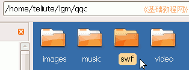
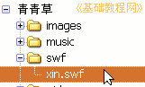
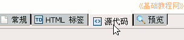

Nvu操作基础教程
作者：Teliute 来源：基础教程网
八、插入Flash 返回目录 下一课这一节我们来学习如何在页面插入Flash动画，Flash动画格式有swf和Flv，下面我们来看一个练 习；
1、启动Nvu
1）点左上角菜单“ 应用程序－编程－Nvu”，就可以启动Nvu程序；
2）第一次启动时会出来两个小面板， 点关闭即可，然后进入程序窗口中；
3）点菜单“格式－页面标题”，修改标题为“插入Flash”，然后点菜单“文件－保存”命令，以“flash.html”保存到qqc文件夹中；
2、复制动画
1）最小化Nvu，在站点文件夹qcc里新建一个文件夹，名称改为 swf ，注意用英文名称；

2）找一个flash动画复制到swf文件夹里，要英文的，中文文件名可以改成英文，
本课images文件夹里有一个 xin.swf ；
3）回到Nvu里，在左边刷新一下站点 (点两下加号也行)，看看新建的swf文件夹；
(点两下加号也行)，看看新建的swf文件夹；

4）保存一下文件，点下边的标签 “源代码”， 进入到代码窗口里面；

5）在上面代码的最后一行里找到</body></html>，在 </body>前面点一下 鼠标左键，然后按两下回车键，中间出来一行空白；
6）在空行里输入下面的代码，可以复制粘贴进 去，红色为音乐地址，这儿是相对地址；<object type="application/x-shockwave-flash" data="swf/xin.swf" width="200" height="145" id="xin"> <param name="movie" value="swf/xin.swf" /> </object> |
7）保存一下文件，点浏览预视 按钮，看一看动画效果；
8）插入flv视频的方法，需要一个swf播放器，这儿使用google的，也可以自己制作一个放进去，下面代码供参考；
这儿使用的播放器，可以到本站常用教具中下载：http://teliute.org/jiaoju/index.htm
| <object
style="width:
320px; height: 240px;" id="hui" type="application/x-shockwave-flash"
data="http://teliute.org/linux/Nvu/lesson8/ggplayer.swf?videoUrl=http://teliute.org/linux/Nvu/lesson8/hui.flv&playerMode=normal"
height="14" width="14"> <param name="allowScriptAccess" value="sameDomain"> <param name="movie" value="teliute.org/linux/Nvu/lesson8/ggplayer.swf?videoUrl=http://teliute.org/linux/Nvu/lesson8/hui.flv&playerMode=normal"> <param name="quality" value="best"> <param name="bgcolor" value="#ffffff"> <param name="scale" value="noScale"> <param name="wmode" value="window"> <param name="salign" value="TL"> </object> |
本节学习了Nvu中插入Flash 动画和flv视频的基本方法，如果你成功地完成了练习，请继续学习下一课内容；
本教程由86团学校TeliuTe制作|著作权所有
转载和引用本站内容，请保留版权信息和本站链接。